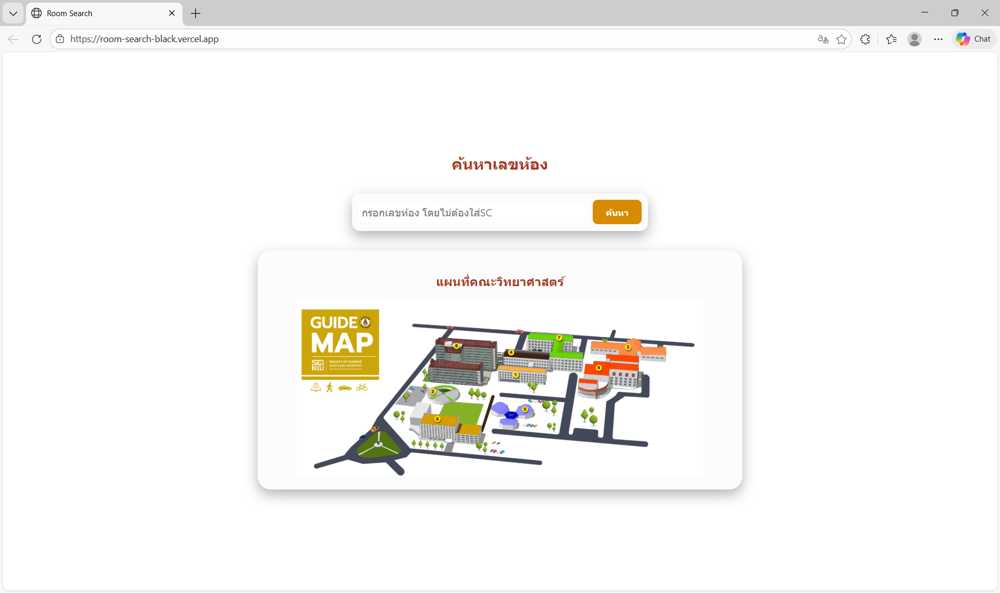
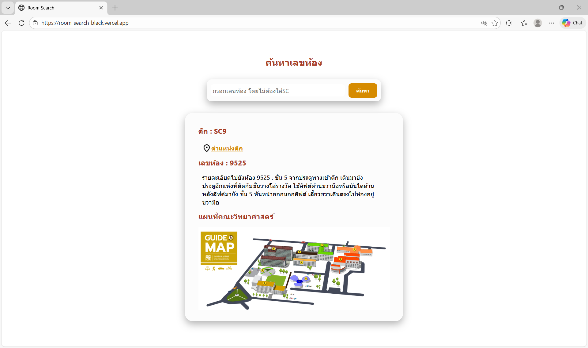
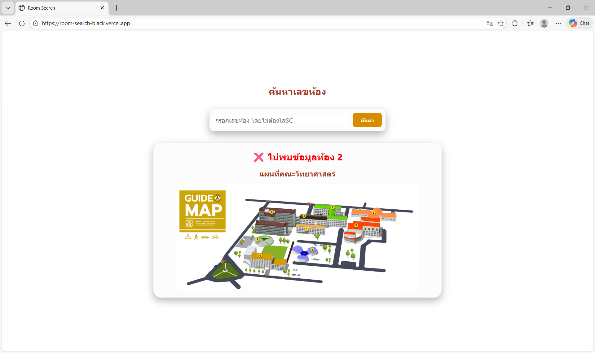

Classroom Search Website (Faculty of Science, KKU)
Aug - Oct 2025 • Express.js, MongoDBDeveloped an intuitive classroom search and navigation website for new students and visitors, improving campus wayfinding during major events like Science Week.
Target: Build an accessible classroom search tool with integrated navigation to support visitors and first-year students at KKU.
Action: Collaborated in a team of 8 to design UX/UI and implement backend services, including Google Maps integration for accurate navigation.
Skills: Express.js, MongoDB, Google Maps API, Postman, UX/UI Design, Deployment.
Applied Theory: Applied User-Centered Design (UCD) and API testing with Postman to ensure smooth data flow and reliable navigation services.
View GitHub Repository Visit Live Demo


